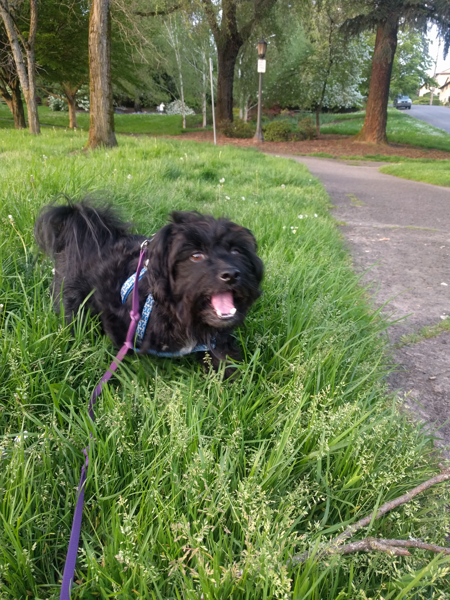

Welcome to Calla's Intro Portfolio!

List of Projects I've Built
- Hello World
- My first project using HTML to include headers, paragraphs, and unordered lists.
- Cookie Recipe
- This was a practice in "cleaning up" indentation for a pre-created HTML file.
- Pet Blog
- This was my first HTML project that used CSS styling!
- My First Webpage
- This project practiced using branches and block elements for HTML, as well as CSS styling and creating a README.md file.
- Private Island
- This was my first "full" project, including multiple HTML files, CSS styling, and a complete README.
- Cupcake Shop
- This was my first project using classes within HTML for specific CSS styling.
- Animal Shelter
- This HTML file tested columns and played with media queries through CSS.
- Week in Review
- This was my first HTML page that played with Bootstrap CSS styling!
- Paradise
- This was an HTML page with additional Bootstrap styling for CSS, including columns and rows.
- Wiki Rebuild
- This project was an attempt to recreate the Wikipedia homepage using HTML and Boostrap within CSS.